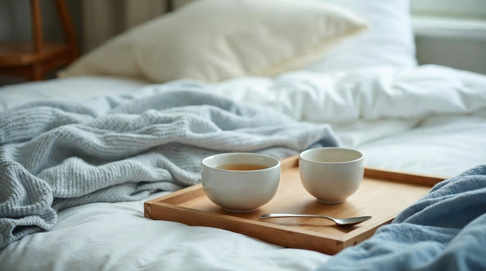
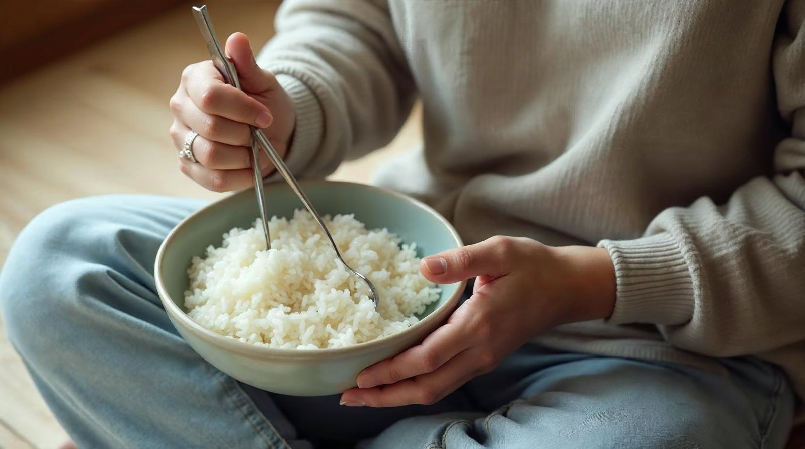
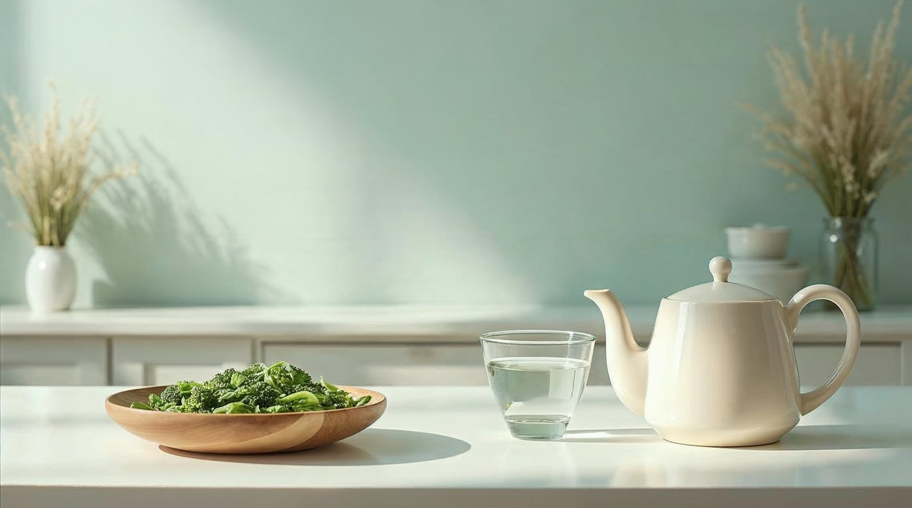
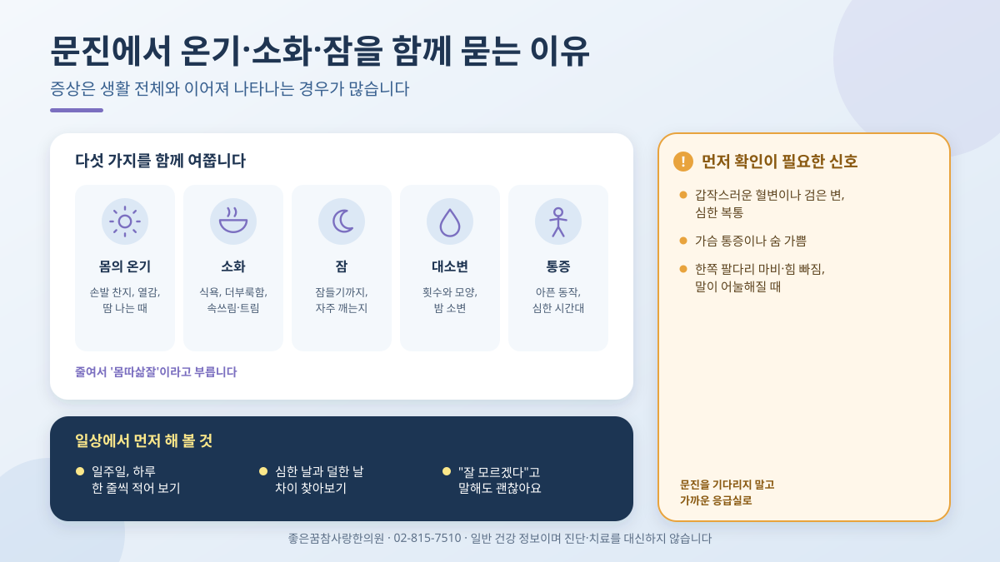

이종호 한의사 감수좋은꿈참사랑한의원 대표원장 (한의사 면허번호 19769)발행 2026-11-23 · 수정 2026-11-26
이 글의 차례
- 왜 함께 묻나요
- 몸의 온기는 왜 여쭙나요?
- 소화는 어디까지 여쭙나요?
- 잠은 어떻게 나눠서 여쭙나요?
- 대소변 이야기가 부끄럽게 느껴지신다면
- 통증은 이렇게 표현해 주시면 좋습니다
- 다섯 가지는 서로 어떻게 이어지나요?
- 먼저 이렇게 여쭙니다
- 땀과 물 마시는 습관은 왜 여쭙나요?
- 마음의 긴장은 어디에서 함께 여쭙나요?
- 예를 들면 이런 경우입니다
- 아이와 어르신은 어떻게 여쭙나요?
- 자주 하는 오해
- 일상에서 먼저 해 볼 수 있는 것
- 한의원에서 함께 살필 수 있는 경우
- 스스로 점검해 보세요
- 첫 방문 문진은 이렇게 진행됩니다
- 답하기 어려운 질문은 이렇게 생각해 보세요
- 다시 오실 때는 무엇을 여쭙나요?
- 일주일 기록은 이렇게 적어 보세요
- 이렇게 기록해 오시면 상담이 쉬워집니다
- 며칠 기록해 보고 언제 상담하나요?
- 이런 증상은 먼저 확인이 필요합니다
- 함께 읽으면 좋은 글
한의원 문진에서 아픈 곳과 상관없어 보이는 온기, 소화, 잠, 대소변까지 묻는 것은 증상이 생활 전체와 이어져 나타나는 경우가 많기 때문입니다. 허리가 아픈 분이 잠을 설치고 소화도 불편하다면 통증만 보는 것보다 함께 보는 편이 이해하기 쉽습니다.
좋은꿈참사랑한의원에서는 이를 몸따삶잘, 즉 몸은 따뜻한지, 소화는 편한지, 잠은 잘 자는지, 대소변은 어떤지, 통증과 함께 평소 생활은 어떤지를 함께 살핀다는 말로 정리해 여쭙니다.
왜 함께 묻나요
- 잠을 설치면 통증을 더 예민하게 느끼고, 통증 때문에 잠을 설치는 일이 서로 이어질 수 있습니다.
- 긴장이 이어지면 소화와 대변의 리듬이 함께 흔들리는 경우가 많습니다.
- 한의학에서는 몸의 온기, 땀, 소화, 대소변을 몸 상태를 가늠하는 기본 단서로 봅니다.
- 여러 불편을 한 번에 들어 두면 무엇부터 살필지 우선순위를 정하기 쉬워집니다.
몸의 온기는 왜 여쭙나요?
한의학에서는 몸이 찬 쪽인지 열감 쪽인지를 살피는 일을 기본으로 여깁니다. 같은 피로나 소화 불편이라도 몸이 찬 분과 더위를 많이 타는 분은 생활에서 바꿔 볼 것과 치료 방향이 달라질 수 있기 때문입니다.
그래서 손발이 찬지, 배가 차가운지, 찬물과 따뜻한 물 중 무엇이 편한지, 땀은 언제 어디에 많이 나는지를 여쭙습니다. 예를 들어 겨울만 되면 손발이 얼음장 같고 배가 자주 아픈 분이라면, 온기와 소화를 묶어서 살펴봅니다.
반대로 얼굴로 열이 오르고 밤에 이불을 걷어차며 땀을 흘린다는 분이라면, 열감과 잠을 함께 봅니다. 몸의 온기는 다른 네 가지를 읽는 바탕이 되는 단서입니다.
소화는 어디까지 여쭙나요?
소화는 단순히 "체했나요"만 여쭙지 않습니다. 입맛이 있는지, 식사량은 어떤지, 먹고 나서 더부룩하거나 쓰린지, 트림이나 신물이 올라오는지, 식사 뒤 유난히 졸린지까지 함께 봅니다.
식사 시간도 중요합니다. 아침을 거르고 점심을 급하게, 저녁을 늦게 몰아서 드시는 생활이라면 소화 불편이 잠과 피로로 이어지기 쉽습니다. 그래서 무엇을 드시는지와 함께 언제, 얼마나 빨리 드시는지를 여쭙습니다. 혼자 드시는지, 화면을 보며 드시는지도 의외로 쓸모 있는 단서입니다.
잠은 어떻게 나눠서 여쭙나요?
"잠은 잘 주무세요?"라는 질문에 많은 분이 "그냥 그래요"라고 답하십니다. 그래서 저는 잠을 몇 조각으로 나눠 여쭙습니다.
- 잠자리에 누워 잠들기까지 얼마나 걸리는지
- 밤에 몇 번 깨는지, 깨면 다시 잠들기 쉬운지
- 꿈을 많이 꾸는지, 새벽에 너무 일찍 깨는지
- 아침에 일어났을 때 개운한지, 낮에 졸린지
이렇게 나눠 보면 같은 "잠을 못 잔다"도 잠들기가 어려운 경우와 자주 깨는 경우가 구분되고, 살필 방향이 달라집니다. 코골이를 들었다면 그것도 함께 말씀해 주세요.
대소변 이야기가 부끄럽게 느껴지신다면
대소변 질문을 낯설어하시는 분이 많습니다. 하지만 대변이 묽은지 단단한지, 하루 몇 번인지, 소변이 잦은지, 밤에 소변 때문에 깨는지는 소화와 몸의 물기, 잠을 이해하는 데 중요한 단서입니다.
자세히 말씀하기 어려우시면 "요즘 변비가 있다", "밤에 한두 번 깬다" 정도로만 알려 주셔도 충분합니다. 말씀하고 싶지 않은 부분은 건너뛰셔도 진료에는 지장이 없습니다.
통증은 이렇게 표현해 주시면 좋습니다
- 어디가: 손가락으로 가리킬 수 있는 한 점인지, 넓게 퍼져 있는지
- 어떻게: 찌르는지, 뻐근한지, 저린지, 화끈거리는지
- 언제: 아침에 심한지, 오래 앉은 뒤인지, 밤에 누우면 심한지
- 무엇을 할 때: 고개를 돌릴 때, 허리를 숙일 때, 계단을 내려갈 때
이렇게 네 가지로 말씀해 주시면 같은 허리 통증이라도 무엇부터 살필지 정하기가 훨씬 쉬워집니다. 통증이 덜한 자세나 시간대가 있다면 그것도 함께 알려 주세요.
다섯 가지는 서로 어떻게 이어지나요?
몸의 온기, 소화, 잠, 대소변, 통증은 따로 떨어진 이야기처럼 보이지만 하루 생활 안에서 서로 꼬리를 물고 이어집니다. 예를 들어 저녁을 늦게 많이 먹으면 속이 더부룩해 잠이 얕아지고, 잠을 설치면 다음 날 몸이 무겁고 통증을 더 예민하게 느끼게 됩니다.
몸이 차면 배가 쉽게 불편해지고 대변이 묽어지기도 하며, 통증 때문에 움직임이 줄면 소화와 대변의 리듬이 함께 느려지기도 합니다. 이렇게 한 군데가 흔들리면 다른 곳도 같이 흔들리는 경우가 많습니다.
그래서 저는 아픈 곳 하나만 보는 대신 다섯 가지를 함께 놓고, 그중 어디서 고리가 시작됐는지를 찾아보려고 합니다. 고리의 시작을 찾으면 생활에서 무엇부터 바꿔 볼지도 자연스럽게 정해집니다.

먼저 이렇게 여쭙니다
- 몸의 온기: 손발이 찬지, 열감이 있는지, 땀이 어떤 때 나는지
- 소화: 식욕, 식사 뒤 더부룩함, 속쓰림, 트림
- 잠: 잠들기까지 걸리는 시간, 자주 깨는지, 아침에 개운한지
- 대소변: 횟수와 모양, 밤에 소변을 보러 깨는지
- 통증: 어떤 동작에서 아픈지, 하루 중 언제 심한지
땀과 물 마시는 습관은 왜 여쭙나요?
땀은 몸의 온기와 이어진 단서라 함께 여쭙습니다. 조금만 움직여도 땀이 쏟아지는지, 밤에 자면서 땀이 나는지, 머리나 손발처럼 특정한 곳에만 나는지에 따라 살필 방향이 달라집니다.
물 마시는 습관도 중요합니다. 목이 자주 말라 찬물을 찾는 분과, 물을 거의 마시지 않고 하루를 보내는 분은 소화와 대소변, 잠의 모습이 다르게 나타나곤 합니다. 하루에 물을 몇 잔쯤, 찬물과 따뜻한 물 중 무엇으로 드시는지 떠올려 오시면 좋습니다.
마음의 긴장은 어디에서 함께 여쭙나요?
다섯 가지를 여쭙다 보면 요즘 마음의 부담 이야기가 자연스럽게 나오는 경우가 많습니다. 일이나 시험, 가족 문제로 긴장이 이어지면 잠이 얕아지고, 속이 쓰리거나 대변이 들쭉날쭉해지며, 어깨와 목이 굳는 일이 함께 생기기 쉽습니다.
그래서 저는 몸의 다섯 가지를 듣는 사이사이에 요즘 마음이 어떤지도 함께 여쭙습니다. 자세히 말씀하지 않으셔도 괜찮습니다. "요즘 좀 바쁘다" 한마디만으로도 다른 이야기들이 왜 그렇게 흔들렸는지 이해하는 데 큰 도움이 됩니다.
예를 들면 이런 경우입니다
- 예를 들어 목과 어깨가 뻣뻣해 오신 직장인이 밤에 자주 깨고 아침에 소화가 안 된다고 하는 경우, 통증만 보지 않고 잠든 시각과 저녁 식사 시간을 함께 정리해 봅니다.
- 예를 들어 시험을 앞둔 수험생이 배가 자주 아프고 화장실을 자주 간다고 하는 경우, 긴장과 대변 리듬, 잠의 길이를 묶어서 여쭙습니다.
- 예를 들어 무릎이 아파 오신 어르신이 밤에 소변 때문에 서너 번 깬다고 하시는 경우, 깨는 횟수와 잠의 질이 낮 동안의 통증 느낌과 이어지는지 함께 살핍니다.
아이와 어르신은 어떻게 여쭙나요?
아이는 자기 몸을 말로 설명하기 어려워해서 보호자께 함께 여쭙습니다. 밥을 얼마나 먹는지, 자다가 자주 뒤척이는지, 배가 아프다고 할 때 화장실은 어떻게 다녀오는지처럼 곁에서 보신 모습을 들려주시면 됩니다. 아이에게는 "배가 꾸룩꾸룩해?"처럼 쉬운 말로 다시 물어봅니다.
어르신은 오래된 불편이 많아 무엇부터 말씀하실지 망설이시는 경우가 많습니다. 그럴 때는 요즘 가장 힘든 것 하나부터 여쭙고, 드시는 약 목록과 함께 나머지를 천천히 정리합니다. 귀가 어둡거나 설명이 길어지는 것이 걱정되시면 가족과 함께 오셔도 좋습니다.
어떤 분이든 다섯 가지를 한 번에 다 말씀하실 필요는 없습니다. 오늘 다 못 한 이야기는 다음 진료에서 이어서 들으면 됩니다.
자주 하는 오해
- 아픈 곳과 상관없는 질문은 시간 낭비라고 여기기 쉽지만, 함께 들어야 무엇부터 살필지 우선순위를 정할 수 있습니다.
- 정확한 숫자로 답해야 한다고 생각하기 쉽지만, 대략적인 느낌으로 말씀하셔도 충분합니다.
- 한 번 답하면 다시 묻지 않을 거라 여기기 쉽지만, 다시 오실 때마다 짧게 여쭤 달라진 점을 확인합니다.
- 다른 병원에서 이미 말한 내용은 반복하지 않아도 된다고 생각하기 쉽지만, 들은 진단이나 검사 결과를 알려 주시면 함께 맞춰 봅니다.

일상에서 먼저 해 볼 수 있는 것
- 일주일 정도 잠, 식사, 대변, 통증을 하루 한 줄씩 적어 보기
- 불편이 심한 날과 덜한 날의 차이를 찾아보기
- 답하기 어려운 질문은 "잘 모르겠다"고 말해도 된다는 점 기억하기
- 다른 병원에서 들은 진단이나 검사 결과를 함께 챙기기

한의원에서 함께 살필 수 있는 경우
- 아픈 곳과 상관없다고 생각되는 불편이 여러 개 있을 때 함께 정리해서 우선순위를 정합니다.
- 어떤 질문에 답하기 어려울 때는 생활 속에서 같이 확인해 나갑니다.
- 변화를 쉽게 기록하고 싶을 때 간단한 메모 방법을 함께 정합니다.
좋은꿈참사랑한의원에서는 모든 분께 맥부터 짚으며 이런 이야기를 여쭙고, 필요하다고 판단될 때 설진·복진을 더해 살핀 뒤 상태에 맞춰 침·추나·한약 상담 등을 정합니다. 다음 진료에서는 같은 영역을 다시 짧게 여쭤 달라진 점을 확인합니다.
스스로 점검해 보세요
- 손발이나 배가 차서 불편한 날이 많다
- 식사 뒤 더부룩하거나 쓰린 날이 일주일에 여러 번 있다
- 잠들기까지 30분 넘게 걸리거나 밤에 자주 깬다
- 대변이 너무 묽거나 단단한 날이 이어진다
- 밤에 소변 때문에 두 번 넘게 깬다
- 통증이 심한 날과 잠을 설친 날이 겹친다
해당하는 항목이 있다면 진료 때 함께 말씀해 주세요. 체크 결과만으로 몸 상태를 판단하지는 않습니다.
첫 방문 문진은 이렇게 진행됩니다
첫 방문에는 가장 불편한 점과 시작된 시기를 먼저 듣고, 원장이 맥을 짚으며 몸의 온기, 소화, 잠, 대소변을 차례로 여쭙습니다. 통증이 있다면 어디가, 어떻게, 언제 아픈지를 함께 정리합니다.
이야기를 나누다 필요하다고 판단되면 혀를 보거나 배를 눌러 보는 진찰을 더합니다. 이렇게 모은 이야기 가운데 지금 가장 먼저 살필 것을 함께 정하고, 오늘 할 치료와 이유, 생활에서 먼저 해 볼 것을 설명드립니다.
답하기 어려운 질문은 이렇게 생각해 보세요
"평소 몸이 찬 편인가요?" 같은 질문은 막상 들으면 답하기 어렵습니다. 그럴 때는 비교해서 떠올려 보시면 쉬워집니다. 가족이나 동료보다 옷을 더 껴입는지, 여름에 에어컨 바람이 유난히 싫은지를 생각해 보시면 됩니다.
잠이나 소화도 마찬가지입니다. 지난 일주일 가운데 가장 잘 잔 날과 가장 못 잔 날을 떠올려 보시고, 둘 사이에 무엇이 달랐는지 말씀해 주시면 숫자보다 많은 이야기를 얻을 수 있습니다.
다시 오실 때는 무엇을 여쭙나요?
다시 오시면 지난번에 가장 불편하다고 하셨던 것부터 여쭙고, 다섯 가지를 짧게 다시 확인합니다. 통증은 줄었는데 잠은 그대로인지, 소화가 편해지면서 아침이 가벼워졌는지처럼 서로 어떻게 함께 움직였는지를 봅니다.
이렇게 이어서 여쭈면 어떤 생활 변화가 몸에 도움이 됐는지, 다음에는 어디를 더 살펴야 할지가 보입니다. 짧게라도 기록을 이어 오시면 이 과정이 훨씬 수월해집니다.
일주일 기록은 이렇게 적어 보세요
기록은 길 필요가 없습니다. 휴대전화 메모에 날짜별로 한 줄씩, 다섯 가지를 짧은 말로 적어 두시면 됩니다. 예를 들어 "손발 참, 저녁 늦게 먹고 더부룩, 1시 취침 두 번 깸, 대변 무름, 아침 허리 뻐근"처럼요.
일주일쯤 모이면 저녁이 늦은 날마다 잠이 얕았다거나, 잠을 설친 다음 날 허리가 더 아팠다는 식의 흐름이 스스로 보이기 시작합니다. 이 흐름을 함께 보면 무엇부터 바꿔 볼지가 분명해집니다. 빠진 날이 있어도 괜찮으니 생각날 때마다 이어서 적어 보세요.
이렇게 기록해 오시면 상담이 쉬워집니다
- 일주일 동안의 잠든 시각과 깬 횟수
- 식사 시간과 소화가 불편했던 때
- 대변 횟수와 모양, 밤에 소변으로 깬 횟수
- 통증이 심했던 동작과 시간
며칠 기록해 보고 언제 상담하나요?
- 여러 불편이 번갈아 나타난다면 일주일쯤 하루 한 줄씩 기록해 보며 어떤 날 함께 나빠지는지 살펴볼 수 있습니다.
- 2주 넘게 잠, 소화, 통증이 함께 흔들리며 일상이 힘들다면 기록을 가지고 진료 때 상의해 보세요.
이런 증상은 먼저 확인이 필요합니다
- 갑작스러운 혈변이나 검은 변, 심한 복통
- 가슴 통증이나 숨 가쁨
이런 신호가 있으면 한의원보다 가까운 병원이나 응급실을 먼저 찾으세요.
함께 읽으면 좋은 글

여쭙는 것
- 몸의 온기: 손발이 찬지, 열감이 있는지, 땀이 어떤 때 나는지
- 소화: 식욕, 식사 뒤 더부룩함, 속쓰림, 트림
- 잠: 잠들기까지 걸리는 시간, 자주 깨는지, 아침에 개운한지
생활에서 해 볼 것
- 일주일 정도 잠, 식사, 대변, 통증을 하루 한 줄씩 적어 보기
- 불편이 심한 날과 덜한 날의 차이를 찾아보기
- 답하기 어려운 질문은 "잘 모르겠다"고 말해도 된다는 점 기억하기
한의원에서 함께 살필 것
- 아픈 곳과 상관없다고 생각되는 불편이 여러 개 있을 때 함께 정리해서 우선순위를 정…
- 어떤 질문에 답하기 어려울 때는 생활 속에서 같이 확인해 나갑니다.
- 변화를 쉽게 기록하고 싶을 때 간단한 메모 방법을 함께 정합니다.
먼저 확인이 필요한 신호
- 갑작스러운 혈변이나 검은 변, 심한 복통
- 가슴 통증이나 숨 가쁨
한눈에 보는 표
| 구분 | 핵심 |
|---|---|
| 여쭙는 것 | 몸의 온기: 손발이 찬지, 열감이 있는지, 땀이 어떤 때 나는지 소화: 식욕, 식사 뒤 더부룩함, 속쓰림, 트림 |
| 생활에서 해 볼 것 | 일주일 정도 잠, 식사, 대변, 통증을 하루 한 줄씩 적어 보기 불편이 심한 날과 덜한 날의 차이를 찾아보기 |
| 한의원에서 함께 살필 것 | 아픈 곳과 상관없다고 생각되는 불편이 여러 개 있을 때 함께 정리해서 우선순위를 정합니다. 어떤 질문에 답하기 어려울 때는 생활 속에서 같이 확인해 나갑니다. |
| 먼저 확인이 필요한 신호 | 갑작스러운 혈변이나 검은 변, 심한 복통 가슴 통증이나 숨 가쁨 |
자주 묻는 질문
허리가 아픈데 왜 소화와 잠을 묻나요?
증상은 서로 영향을 줄 수 있어서 생활 전체를 함께 보기 위해서입니다.
답하기 곤란한 질문에는 어떻게 하나요?
말씀하고 싶지 않은 부분은 건너뛰셔도 됩니다.
문진은 오래 걸리나요?
증상과 상태에 따라 다르며, 처음 방문 때 조금 더 걸릴 수 있습니다.
기억이 잘 나지 않으면 어떻게 하나요?
기억나는 만큼만 말씀해 주셔도 됩니다. 다음 진료 전까지 짧게 기록해 오시면 그때 이어서 살핍니다.
좋은꿈참사랑한의원은 재진 때 지난번 이야기부터 이어서 여쭙니다. 진료시간과 예약은 오시는 길에서 확인하세요.
어디서 상담받을 수 있나요?
좋은꿈참사랑한의원은 서울 동작구 만양로2길 2 신성빌딩 3층·5층(서울 동작구 상도동, 7호선 상도역 3번 출구 근처)에 있습니다. 한의사 3명(이종호 대표원장, 조영기 수석진료원장, 정원영 진료원장)이 진료합니다. 진료시간은 평일 09:30~20:00(점심 13:00~14:00), 토·일·공휴일 09:30~15:00이며, 방문 전 전화로 확인을 권합니다. 예약은 네이버 예약, 카카오톡 상담, 전화 02-815-7510로 받습니다.
이 글은 일반적인 건강 정보이며 개인의 진단이나 치료를 대신하지 않습니다. 증상이 있거나 복용 중인 약이 있다면 진료를 통해 확인하세요. 치료 효과는 개인마다 다를 수 있습니다.
작성 기준: 일반적으로 알려져 있는 건강 정보를 참고해 정리했습니다(대표원장 감수). 증상 기록은 1~2주 동안 하루 1회, 비슷한 시간에 적어 오시면 지난 상태와 비교하기 쉽습니다.